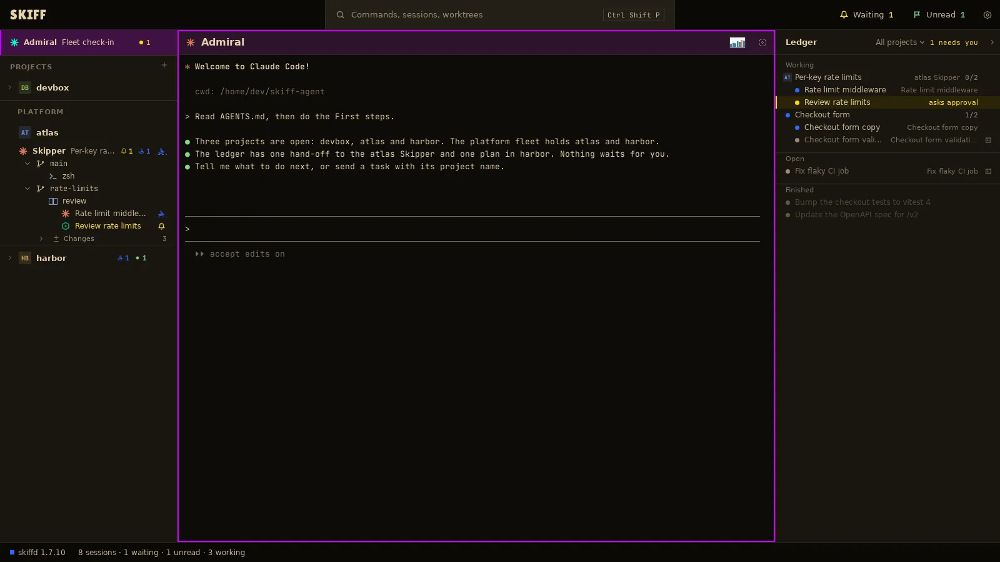

Skiff
SkiffThe Ledger and result files
The ledger is Admiral's record of tasks: which session got each one, what state it is in, and where its result went. The Ledger panel shows it beside Admiral's pane. Each finished task has a result file you can open.
Chapter 7 of 9 · Skiff user guide
The Ledger panel
- Show Admiral's pane with Ctrl+Shift+L. The Ledger opens at its right. It shows only while that pane is the one pane on screen. A project Skipper's pane and a fleet Skipper's pane have the panel too.
- The panel has three sections. Working: an agent is on the task now. Open: the task is not closed, and no agent is on it. Rows that need you come first and turn amber. Finished: closed work, newest first.
- A plan is a head row with its tasks under it. A hand-off to a project Skipper shows the project's initials, with its tasks one step in.
- Click a row to open its pane, or its result when the task is done. The icons at the right of a row do the same: Open pane and Open result.
- Click the filter in the panel's head, All projects, to show one fleet or one project. The amber count beside it, 1 needs you, is a button: it goes to the first row that needs you.
- Press Ctrl+Shift+Alt+L to fold the panel to a rail, and again to open it. The rail keeps the amber count.

Keys in the panel
| Ctrl+Shift+Right | From Admiral's pane, give the keys to the panel. It opens a folded panel. |
| Up / Down | Light the previous or next row. Ctrl+Shift+Up and Ctrl+Shift+Down do the same. |
| Enter | Open the lit row: its pane or its result. |
| Ctrl+Shift+Left or Esc | Give the keys back to Admiral's pane. |
The panel never changes the ledger. Only Admiral and the Skippers do. Ask Admiral in its pane to close, reopen or drop work.
Result files
When Admiral sends a task, it gives the session a path for its result. The session writes its report there when it is done. Those files are what Admiral reads back to you, and what you open from the Ledger.
- Click a done row, or its Open result icon. The file opens as Settings › Open with › Markdown says. With an empty row, the system's default app opens it.
- A plan's row opens the plan file in the plan's folder. A task in a plan opens its own result in that folder.
- The files live in the results folder of the Skiff agent's folder. A project Skipper's results are under projects and the project's name. A fleet Skipper's are under fleets. Right-click the Admiral row and click Show in file manager to get there.
- Settings › Disk use counts the result files, with a row for each Skipper. Flush done work… removes the files of closed work. See chapter 9.